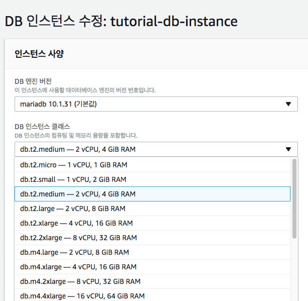
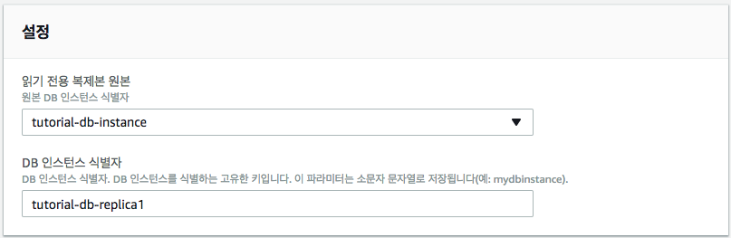
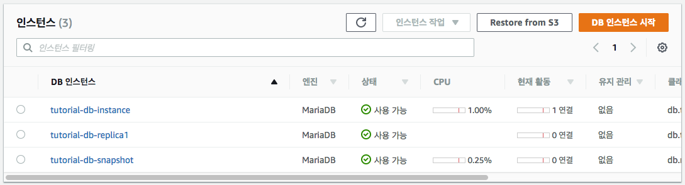

애플리케이션에서 읽기 전용 복제본으로 읽기 쿼리를 라우팅하여 원본 DB 인스턴스의 로드에 대한 부하를 줄임

RDS Scale Up 절차
DB 인스턴스를 선택하고, [인스턴스 작업]-[수정] 선택하여 인스턴스 사양의 필요한 설정 변경후에 계속 클릭

즉시 설정변경을 적용하고자 하는 경우에는 [즉시 적용] 체크 후, [DB 인스턴스 수정] 클릭
애플리케이션에서 읽기 전용 복제본으로 읽기 쿼리를 라우팅하여 원본 DB 인스턴스의 로드에 대한 부하를 줄임
절차
Amazon RDS가 원본 DB 인스턴스의 DB 스냅샷을 캡처하는 동안 원본 인스턴스에 짧게 I/O 지연이 발생
읽기 전용 복제본이 DB 인스턴스의 역할을 하지만 읽기 전용 연결만 가능
애플리케이션을 읽기 전용 복제본에 연결하는 방법은 DB 인스턴스에 하는 것과 동일
Amazon RDS는 원본 DB 인스턴스의 데이터베이스를 모두 복제
Amazon RDS는 원본 DB 인스턴스와 읽기 전용 복제본 사이에 안전한 통신 채널을 설정
설정의 [DB 인스턴스 식별자] 텍스트 상자에 읽기 전용 복제본의 이름(예, tutorial-db-replica1)을 입력합니다. 필요에 따라 다른 설정을 조정합니다.

원본 DB 인스턴스의 리전과 다른 곳인 경우에는 네트워크 및 보안의 [대상 리전] 상자에 읽기 전용 복제본의 리전을 지정합니다.
읽기 전용 복제본을 VPC에 생성하고 싶은 경우에는 네트워크 및 보안의 [대상 DB 서브넷 그룹] 상자에 해당 VPC와 연동되어 있는 DB 서브넷 그룹을 지정합니다.
필요한 설정을 마친 후에, [읽기 전용 복제본 생성]을 클릭합니다.

사전 준비
/var/www/inc/dbinfo.inc 편집
<?php
define('DB_SERVER', ‘db_servier_endpoint');
define('DB_REPLICA', ‘db_replica_endpoint');
define('DB_USERNAME', 'tutorial_user');
define('DB_PASSWORD', 'master_password');
define('DB_DATABASE', 'sample');
?>다음 링크의 콘덴츠를 /var/www/html/SamplePage2.php 에 저장 https://github.com/kwanulee/AWSExample/blob/master/RDS-PHP/SamplePage2.php
웹 서버를 열고 http://EC2 instance endpoint/SamplePage2.php (예: http://ec2-52-79-51-167.ap-northeast-2.compute.amazonaws.com/SamplePage2.php) 를 검색하여 웹 서버에서 RDS MariaDB DB 인스턴스에 제대로 연결되는지 확인